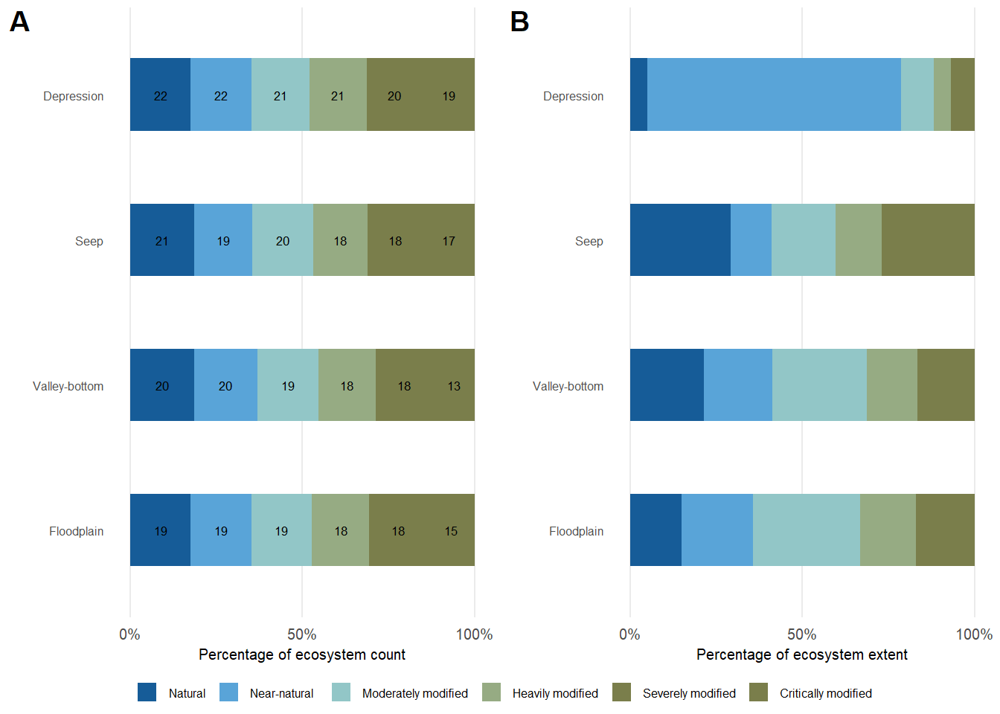
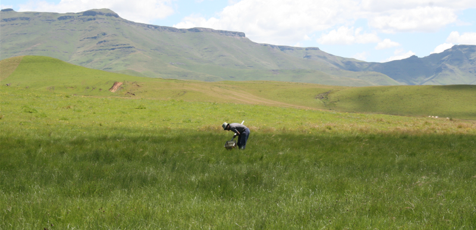
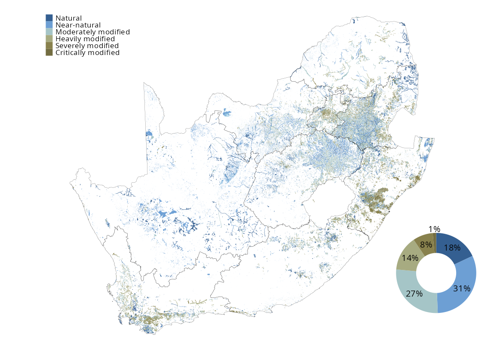

![]()

While numerous policies and strategies aim to improve or at least stabilise the ecological condition of wetlands in South Africa, overall wetland condition continues to deteriorate. Continued wetland loss and declining ecological condition has led to significant ecological and financial loss. This deterioration is often gradual and ‘out of sight’ and, therefore, generally not perceived as an immediate threat. It is, however, a serious concern which should be addressed through restoration (where feasible and strategic) and improved, frequent, monitoring and reporting.

35%
of wetland extent
Natural or Near-natural
of wetland extent
Natural or Near-natural
58%
of 82 inland wetland types
Natural or Near-natural
of 82 inland wetland types
Natural or Near-natural

Ecological condition was calculated for 171 303 wetlands. Of these, approximately 1 476 561 ha (49%) of inland wetland extent and 100 029 (58%) of inland wetland ecosystem types have been assessed to be in natural (class A) or near-natural (class B) ecological condition. Approximately 808 325 ha (27%) of inland wetland extent and 24 752 (14%) of inland wetland ecosystem types have been assessed to be in a moderately modified (class C) ecological condition and approximately 705 797 (27%) of inland wetland extent and 46 522 (24%) of inland wetland ecosystem types have been assessed to be in severely modified (class D, E or F) ecological condition.
Of the different hydrogeomorphological types, depression wetlands are in the best ecological condition, with 14% of depression wetlands Severely Modified, 11% Moderately Modified and 76% in a Near-Natural or Natural ecological state. Floodplain, unchannelled valley-bottom, and seep wetlands all appear to have 42% Severely Modified wetland extent, with 34%, 35%, and 42% respectively in Near-Natural or Natural ecological condition.
| Natural | Near-natural | Moderately modified | Heavily modified | Severely modified | Critically modified | ||
|---|---|---|---|---|---|---|---|
| Depression | Extent (km2) | 1 396 | 5 070 | 768 | 187 | 127 | 106 |
| Percentage | 18 | 66 | 10 | 2 | 2 | 1 | |
| Seep | Extent (km2) | 1 094 | 597 | 1 327 | 923 | 850 | 164 |
| Percentage | 22 | 12 | 27 | 19 | 17 | 3 | |
| Unchannelled valley-bottom | Extent (km2) | 1 193 | 909 | 856 | 361 | 232 | 30 |
| Percentage | 33 | 25 | 24 | 10 | 6 | 1 | |
| Floodplain | Extent (km2) | 1 706 | 2 801 | 5 132 | 2 759 | 1 215 | 105 |
| Percentage | 12 | 20 | 37 | 20 | 9 | 1 | |
Download the data here.
Wetlands are complex systems that influenced by multiple biotic and abiotic factors. Determining wetland ecological condition requires a multidisciplinary approach that allows for determining a single condition score from all the xxx/ While previous approaches to determine wetland condition at the national scale were sound, they lacked the wholistic and xxx approach of MacFarlane et al. (2020). The structured nature of this approach allows for a collaborative xxxx present ecological state (PES) scores, also allows for the inclusion of infield expert validated data that collect xxx approach for national wetland map assessment.
| Natural | Near-natural | Moderately modified | Heavily modified | Severely modified | Critically modified | ||
|---|---|---|---|---|---|---|---|
| Albany Thicket_Depression | Extent (km2) | 4 | 13 | 1 | 1 | 1 | 5 |
| Percentage | 17 | 52 | 4 | 5 | 2 | 20 | |
| Albany Thicket_Floodplain | Extent (km2) | 1 | 11 | 6 | 1 | 10 | 0 |
| Percentage | 2 | 39 | 22 | 2 | 35 | 0 | |
| Albany Thicket_Seep | Extent (km2) | 2 | 1 | 1 | 1 | 1 | 0 |
| Percentage | 33 | 21 | 21 | 12 | 14 | 0 | |
| Albany Thicket_Unchannelled valley-bottom | Extent (km2) | 1 | 1 | 0 | 0 | 2 | 0 |
| Percentage | 23 | 12 | 5 | 7 | 53 | 0 | |
| Bushmanland_Depression | Extent (km2) | 376 | 2 655 | 200 | 17 | 15 | 8 |
| Percentage | 11 | 81 | 6 | 1 | 0 | 0 | |
| Bushmanland_Floodplain | Extent (km2) | 93 | 1 | 0 | 0 | 0 | 0 |
| Percentage | 99 | 1 | 0 | 0 | 0 | 0 | |
| Bushmanland_Seep | Extent (km2) | 16 | 1 | 0 | 0 | 0 | 0 |
| Percentage | 96 | 4 | 0 | 0 | 0 | 0 | |
| Bushmanland_Unchannelled valley-bottom | Extent (km2) | 690 | 17 | 0 | 0 | 0 | 0 |
| Percentage | 98 | 2 | 0 | 0 | 0 | 0 | |
| Central Bushveld_Depression | Extent (km2) | 3 | 38 | 8 | 2 | 1 | 2 |
| Percentage | 5 | 71 | 14 | 4 | 2 | 3 | |
| Central Bushveld_Floodplain | Extent (km2) | 167 | 194 | 821 | 244 | 151 | 2 |
| Percentage | 11 | 12 | 52 | 15 | 10 | 0 | |
| Central Bushveld_Seep | Extent (km2) | 43 | 21 | 52 | 43 | 36 | 3 |
| Percentage | 22 | 11 | 26 | 22 | 18 | 2 | |
| Central Bushveld_Unchannelled valley-bottom | Extent (km2) | 52 | 212 | 86 | 48 | 46 | 1 |
| Percentage | 12 | 48 | 19 | 11 | 10 | 0 | |
| Drakensberg Grassland_Depression | Extent (km2) | 6 | 4 | 0 | 0 | 0 | 0 |
| Percentage | 56 | 39 | 1 | 2 | 0 | 1 | |
| Drakensberg Grassland_Floodplain | Extent (km2) | 24 | 22 | 86 | 93 | 14 | 0 |
| Percentage | 10 | 9 | 36 | 39 | 6 | 0 | |
| Drakensberg Grassland_Seep | Extent (km2) | 58 | 13 | 25 | 27 | 12 | 3 |
| Percentage | 42 | 9 | 18 | 20 | 9 | 2 | |
| Drakensberg Grassland_Unchannelled valley-bottom | Extent (km2) | 9 | 0 | 1 | 1 | 7 | 0 |
| Percentage | 50 | 1 | 7 | 3 | 38 | 2 | |
| Dry Highveld Grassland_Depression | Extent (km2) | 426 | 457 | 181 | 61 | 28 | 39 |
| Percentage | 36 | 38 | 15 | 5 | 2 | 3 | |
| Dry Highveld Grassland_Floodplain | Extent (km2) | 92 | 544 | 681 | 128 | 39 | 1 |
| Percentage | 6 | 37 | 46 | 9 | 3 | 0 | |
| Dry Highveld Grassland_Seep | Extent (km2) | 29 | 42 | 128 | 17 | 26 | 2 |
| Percentage | 12 | 17 | 53 | 7 | 11 | 1 | |
| Dry Highveld Grassland_Unchannelled valley-bottom | Extent (km2) | 46 | 314 | 375 | 68 | 33 | 0 |
| Percentage | 5 | 38 | 45 | 8 | 4 | 0 | |
| East Coast Renosterveld_Depression | Extent (km2) | 16 | 1 | 1 | 1 | 0 | 0 |
| Percentage | 81 | 5 | 7 | 5 | 2 | 2 | |
| East Coast Renosterveld_Floodplain | Extent (km2) | 4 | 12 | 142 | 101 | 90 | 0 |
| Percentage | 1 | 3 | 40 | 29 | 26 | 0 | |
| East Coast Renosterveld_Seep | Extent (km2) | 6 | 15 | 22 | 21 | 16 | 2 |
| Percentage | 7 | 19 | 26 | 26 | 20 | 3 | |
| East Coast Renosterveld_Unchannelled valley-bottom | Extent (km2) | 0 | 7 | 0 | 4 | 0 | 0 |
| Percentage | 0 | 64 | 1 | 34 | 1 | 0 | |
| Eastern Fynbos-Renosterveld_Depression | Extent (km2) | 0 | 3 | 0 | 0 | 1 | 0 |
| Percentage | 2 | 64 | 9 | 4 | 13 | 7 | |
| Eastern Kalahari Bushveld_Depression | Extent (km2) | 125 | 809 | 69 | 17 | 11 | 10 |
| Percentage | 12 | 78 | 7 | 2 | 1 | 1 | |
| Eastern Kalahari Bushveld_Seep | Extent (km2) | 189 | 22 | 46 | 10 | 17 | 0 |
| Percentage | 67 | 8 | 16 | 3 | 6 | 0 | |
| Eastern Kalahari Bushveld_Unchannelled valley-bottom | Extent (km2) | 153 | 167 | 45 | 12 | 6 | 0 |
| Percentage | 40 | 44 | 12 | 3 | 2 | 0 | |
| Kalahari Duneveld_Depression | Extent (km2) | 80 | 162 | 37 | 22 | 38 | 3 |
| Percentage | 23 | 47 | 11 | 6 | 11 | 1 | |
| Kalahari Duneveld_Seep | Extent (km2) | 8 | 0 | 0 | 0 | 0 | 0 |
| Percentage | 100 | 0 | 0 | 0 | 0 | 0 | |
| Karoo Interior_Depression | Extent (km2) | 154 | 479 | 18 | 13 | 4 | 1 |
| Percentage | 23 | 72 | 3 | 2 | 1 | 0 | |
| Karoo Interior_Floodplain | Extent (km2) | 595 | 184 | 143 | 257 | 114 | 0 |
| Percentage | 46 | 14 | 11 | 20 | 9 | 0 | |
| Karoo Interior_Seep | Extent (km2) | 76 | 5 | 3 | 2 | 2 | 0 |
| Percentage | 87 | 6 | 4 | 2 | 2 | 0 | |
| Karoo Interior_Unchannelled valley-bottom | Extent (km2) | 107 | 98 | 7 | 1 | 1 | 0 |
| Percentage | 50 | 46 | 3 | 0 | 0 | 0 | |
| Knersvlakte_Depression | Extent (km2) | 0 | 1 | 0 | 0 | 0 | 0 |
| Percentage | 1 | 87 | 0 | 0 | 12 | 0 | |
| Kwa-Zulu Natal Coastal Belt_Floodplain | Extent (km2) | 0 | 3 | 16 | 17 | 13 | 16 |
| Percentage | 0 | 4 | 25 | 27 | 20 | 24 | |
| Kwa-Zulu Natal Coastal Belt_Seep | Extent (km2) | 0 | 1 | 3 | 2 | 14 | 27 |
| Percentage | 1 | 2 | 6 | 4 | 30 | 58 | |
| Kwa-Zulu Natal Coastal Belt_Unchannelled valley-bottom | Extent (km2) | 0 | 2 | 4 | 2 | 9 | 10 |
| Percentage | 0 | 7 | 14 | 9 | 33 | 37 | |
| Lowveld_Depression | Extent (km2) | 4 | 59 | 14 | 3 | 8 | 3 |
| Percentage | 4 | 65 | 15 | 4 | 9 | 3 | |
| Lowveld_Floodplain | Extent (km2) | 187 | 82 | 160 | 127 | 59 | 9 |
| Percentage | 30 | 13 | 26 | 20 | 9 | 1 | |
| Lowveld_Seep | Extent (km2) | 49 | 26 | 56 | 53 | 46 | 8 |
| Percentage | 21 | 11 | 23 | 22 | 19 | 3 | |
| Lowveld_Unchannelled valley-bottom | Extent (km2) | 17 | 8 | 8 | 19 | 12 | 3 |
| Percentage | 25 | 12 | 12 | 28 | 17 | 5 | |
| Maputaland Coastal Belt_Depression | Extent (km2) | 3 | 90 | 107 | 11 | 6 | 6 |
| Percentage | 1 | 40 | 48 | 5 | 2 | 3 | |
| Maputaland Coastal Belt_Floodplain | Extent (km2) | 13 | 319 | 43 | 22 | 136 | 28 |
| Percentage | 2 | 57 | 8 | 4 | 24 | 5 | |
| Maputaland Coastal Belt_Seep | Extent (km2) | 7 | 1 | 8 | 4 | 9 | 9 |
| Percentage | 19 | 2 | 21 | 11 | 24 | 23 | |
| Maputaland Coastal Belt_Unchannelled valley-bottom | Extent (km2) | 15 | 7 | 10 | 10 | 10 | 6 |
| Percentage | 25 | 12 | 17 | 17 | 18 | 11 | |
| Mesic Highveld Grassland_Depression | Extent (km2) | 184 | 171 | 73 | 28 | 9 | 9 |
| Percentage | 39 | 36 | 15 | 6 | 2 | 2 | |
| Mesic Highveld Grassland_Floodplain | Extent (km2) | 168 | 1 293 | 2 232 | 828 | 227 | 8 |
| Percentage | 4 | 27 | 47 | 17 | 5 | 0 | |
| Mesic Highveld Grassland_Seep | Extent (km2) | 277 | 275 | 553 | 296 | 205 | 19 |
| Percentage | 17 | 17 | 34 | 18 | 13 | 1 | |
| Mesic Highveld Grassland_Unchannelled valley-bottom | Extent (km2) | 26 | 41 | 219 | 87 | 44 | 3 |
| Percentage | 6 | 10 | 52 | 21 | 11 | 1 | |
| Mopane_Depression | Extent (km2) | 0 | 11 | 1 | 0 | 0 | 0 |
| Percentage | 0 | 87 | 10 | 1 | 1 | 0 | |
| Mopane_Floodplain | Extent (km2) | 238 | 7 | 37 | 20 | 2 | 1 |
| Percentage | 78 | 2 | 12 | 6 | 1 | 0 | |
| Mopane_Seep | Extent (km2) | 1 | 0 | 0 | 0 | 0 | 0 |
| Percentage | 86 | 0 | 14 | 0 | 0 | 0 | |
| Mopane_Unchannelled valley-bottom | Extent (km2) | 42 | 1 | 0 | 0 | 0 | 0 |
| Percentage | 97 | 3 | 0 | 0 | 0 | 0 | |
| Namaqualand_Depression | Extent (km2) | 2 | 77 | 21 | 4 | 2 | 17 |
| Percentage | 2 | 63 | 17 | 3 | 1 | 14 | |
| Northwest Fynbos_Depression | Extent (km2) | 1 | 10 | 0 | 1 | 0 | 0 |
| Percentage | 9 | 79 | 1 | 7 | 3 | 0 | |
| Northwest Fynbos_Floodplain | Extent (km2) | 10 | 6 | 94 | 26 | 8 | 4 |
| Percentage | 7 | 4 | 64 | 18 | 5 | 3 | |
| Northwest Fynbos_Seep | Extent (km2) | 10 | 2 | 10 | 6 | 7 | 0 |
| Percentage | 27 | 7 | 29 | 18 | 20 | 0 | |
| Northwest Fynbos_Unchannelled valley-bottom | Extent (km2) | 1 | 0 | 3 | 1 | 2 | 0 |
| Percentage | 11 | 3 | 43 | 17 | 26 | 0 | |
| Pondoland Coastal Belt_Floodplain | Extent (km2) | 1 | 1 | 1 | 1 | 0 | 0 |
| Percentage | 22 | 25 | 20 | 26 | 7 | 0 | |
| Pondoland Coastal Belt_Seep | Extent (km2) | 4 | 4 | 4 | 1 | 2 | 0 |
| Percentage | 25 | 26 | 24 | 8 | 14 | 3 | |
| Pondoland Coastal Belt_Unchannelled valley-bottom | Extent (km2) | 1 | 1 | 3 | 0 | 0 | 0 |
| Percentage | 23 | 17 | 58 | 1 | 2 | 0 | |
| Southern Fynbos_Depression | Extent (km2) | 1 | 14 | 0 | 0 | 0 | 0 |
| Percentage | 6 | 93 | 0 | 1 | 0 | 0 | |
| Southern Fynbos_Floodplain | Extent (km2) | 40 | 12 | 34 | 93 | 55 | 1 |
| Percentage | 17 | 5 | 14 | 39 | 23 | 0 | |
| Southern Fynbos_Seep | Extent (km2) | 40 | 8 | 24 | 13 | 19 | 6 |
| Percentage | 36 | 8 | 22 | 12 | 17 | 5 | |
| Southern Fynbos_Unchannelled valley-bottom | Extent (km2) | 6 | 2 | 6 | 5 | 5 | 1 |
| Percentage | 24 | 8 | 24 | 20 | 20 | 3 | |
| Southwest Fynbos_Depression | Extent (km2) | 3 | 4 | 0 | 0 | 0 | 0 |
| Percentage | 37 | 56 | 4 | 2 | 0 | 0 | |
| Southwest Fynbos_Floodplain | Extent (km2) | 33 | 36 | 146 | 94 | 32 | 14 |
| Percentage | 9 | 10 | 41 | 26 | 9 | 4 | |
| Southwest Fynbos_Seep | Extent (km2) | 95 | 13 | 35 | 22 | 32 | 3 |
| Percentage | 47 | 7 | 17 | 11 | 16 | 2 | |
| Southwest Fynbos_Unchannelled valley-bottom | Extent (km2) | 3 | 1 | 8 | 0 | 1 | 0 |
| Percentage | 22 | 10 | 56 | 3 | 9 | 1 | |
| Sub-Escarpment Grassland_Depression | Extent (km2) | 5 | 8 | 29 | 2 | 1 | 1 |
| Percentage | 11 | 17 | 62 | 5 | 3 | 2 | |
| Sub-escarpment Grassland_Floodplain | Extent (km2) | 39 | 54 | 383 | 565 | 177 | 8 |
| Percentage | 3 | 4 | 31 | 46 | 14 | 1 | |
| Sub-escarpment Grassland_Seep | Extent (km2) | 170 | 130 | 316 | 370 | 326 | 45 |
| Percentage | 13 | 10 | 23 | 27 | 24 | 3 | |
| Sub-escarpment Grassland_Unchannelled valley-bottom | Extent (km2) | 25 | 28 | 76 | 96 | 44 | 4 |
| Percentage | 9 | 10 | 28 | 35 | 16 | 1 | |
| Sub-escarpment Savanna_Depression | Extent (km2) | 0 | 2 | 1 | 0 | 0 | 1 |
| Percentage | 4 | 47 | 18 | 10 | 6 | 15 | |
| Sub-escarpment Savanna_Floodplain | Extent (km2) | 1 | 5 | 38 | 52 | 63 | 14 |
| Percentage | 1 | 3 | 22 | 30 | 36 | 8 | |
| Sub-escarpment Savanna_Seep | Extent (km2) | 13 | 16 | 25 | 29 | 73 | 36 |
| Percentage | 7 | 8 | 13 | 15 | 38 | 19 | |
| Sub-escarpment Savanna_Unchannelled valley-bottom | Extent (km2) | 1 | 0 | 4 | 5 | 7 | 2 |
| Percentage | 3 | 2 | 22 | 28 | 37 | 9 | |
| West Coast_Depression | Extent (km2) | 2 | 4 | 8 | 3 | 1 | 0 |
| Percentage | 12 | 24 | 42 | 14 | 6 | 1 | |
| West Coast_Floodplain | Extent (km2) | 0 | 15 | 68 | 91 | 24 | 0 |
| Percentage | 0 | 8 | 34 | 46 | 12 | 0 | |
| West Coast_Seep | Extent (km2) | 1 | 1 | 17 | 6 | 7 | 1 |
| Percentage | 4 | 3 | 50 | 20 | 21 | 3 | |
| West Coast_Unchannelled valley-bottom | Extent (km2) | 1 | 1 | 2 | 1 | 1 | 0 |
| Percentage | 10 | 9 | 29 | 25 | 23 | 4 | |
Download the data by wetland type here.
Approach to develop this input layer
Wetland ecological condition was determined using an automated approach (ArcGIS python scripts) of the Level 1A method described xxx MacFarlane et al. (2020), which is a low confidence, non-detailed approach that is suitable for assessing multiple wetlands xxx those of a national wetland inventory. In addition to being typed according to Ollis et al. 2013, the method also requires xxx wetland to have a 200 m buffer, as well as have its area of influence mapped. While the 200 m buffer is created by the automated process, the area of influence was created using a separate, but also automated, process. This allows the area of influence to be the actual wetland catchment, instead of buffers as were used during the previous NBA assessment (Van Deventer et al. 2019).
Overall wetland condition was calculated from the combined state of wetland hydrology, water quality, geomorphology, and vegetation, which were all calculated from the inferred pressures of different land cover classes (MacFarlane et al. 2020).
The systematic nature of the PES process allows for the development of a base dataset which can be augmented by expert data. xxx has been initiated through selected expert engagements with the National Wetland Map team, during which spatial extent, typing, and PES data were xxx for individual wetlands and wetland complexes. While the expert scores [were not adopted], they represent the first step xxx building a reference dataset that will directly and indirectly inform future wetland ecological condition assessments.
In addition to allowing for the rapid assessment of multiple wetlands, the automation of a standardised PES method xxx the opportunity for temporal analysis by applying land cover grids from different time periods as input data. This may potentially xxxx series analysis that will reveal not only the trajectory of change in wetland ecological condition over time, but also what is responsible for xxx.
Technical documentation
Code repository
https://github.com/askowno/RLE_wet
Related publications and supporting information
Harris, L.R., Skowno, A.L., Holness, S.D., Sink, K.J., van Niekerk, L., van Deventer, H., Smith-Adao, L., Job, N., Khatieb, S., Monyeki, M. (in review). Indicators for tracking progress in effective, representative ecosystem protection.
Recommended citation
Collins, N.B., Job, N., Awuah, A., Kok, R., Mayekiso, P., Currie, J., Ollis, D., & Kotze, D. 2025. Wetland ecological condition: Freshwater (inland aquatic) realm. National Biodiversity Assessment 2025. South African National Biodiversity Institute. http://nba.sanbi.org.za/.